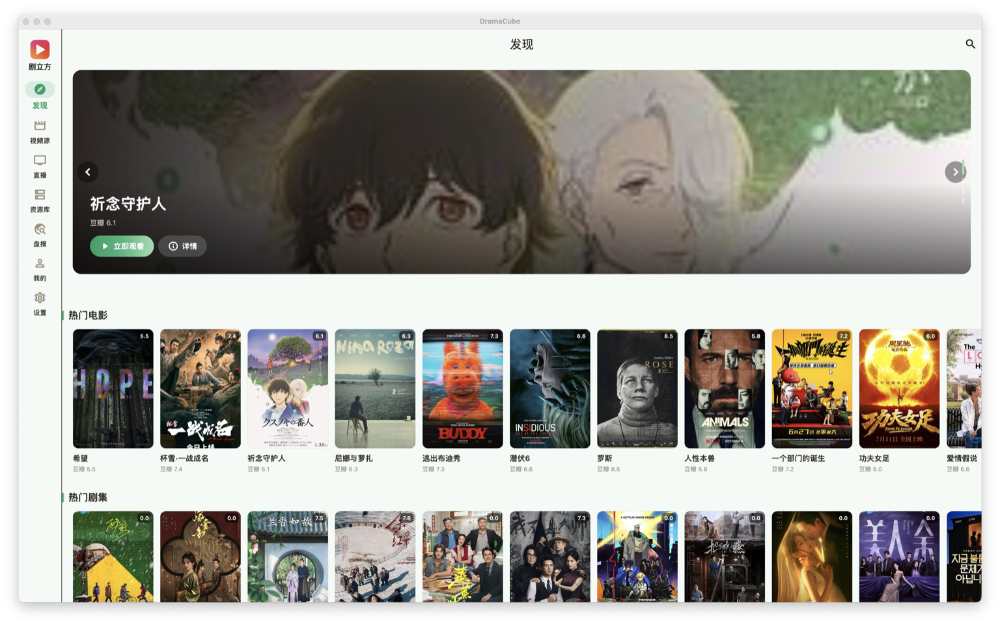
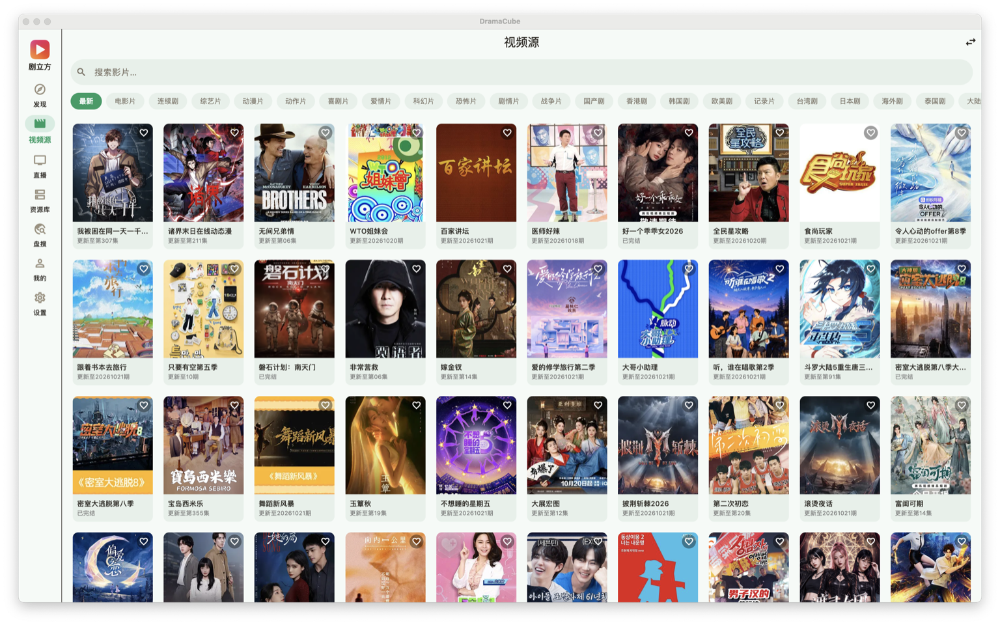
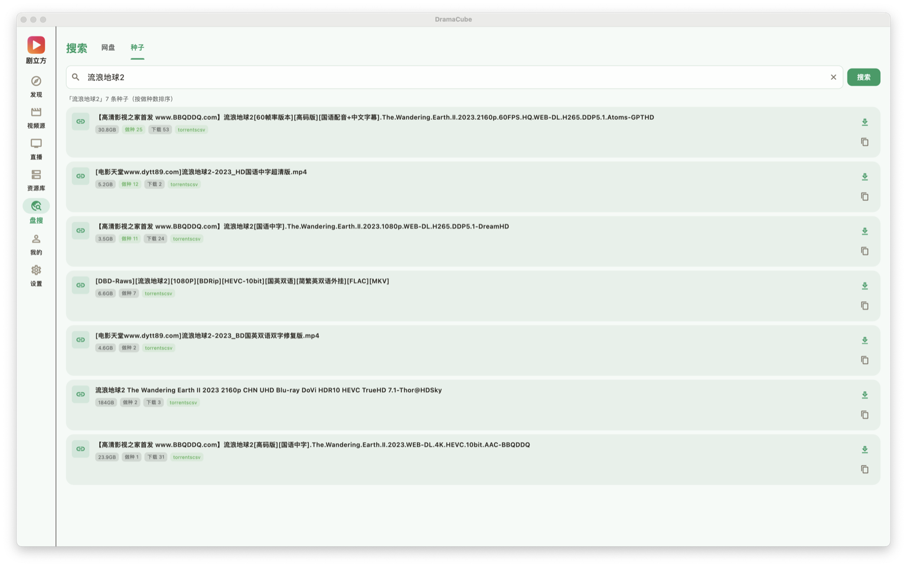
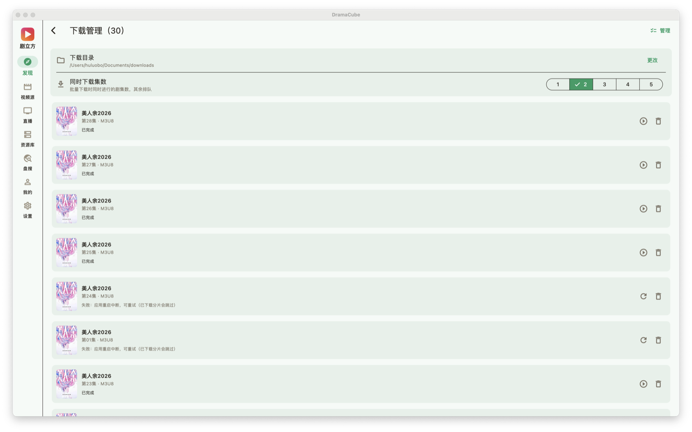

三端分化设计：桌面影院沉浸宽屏、移动暖阳触控优先、TV 焦点引擎遥控器直达。

豆瓣热门 + B 站番剧榜，Cinema Hero 视差轮播，继续观看无缝续播

TVBox / 采集站订阅与本地导入，连通性自动测速、失效自动禁用、按延迟排序

网盘 / 磁力聚合搜索，内置中文友好种子源，代理 / 直连双通道自动回退

剧集 mp4 流式 + m3u8 多线程分片，libtorrent 引擎 DHT / LSD / uPnP 全开，断点续传
内容聚合 × 播放体验 × 下载引擎 × 数据个性化，四大能力一站搞定。
TVBox / 采集站视频源订阅与本地导入，连通性自动测速、失效自动禁用、按延迟排序；M3U / TXT 直播源导入，分源浏览或合并去重；WebDAV / 本地挂载 NAS 资源递归扫描，首帧封面后台生成。
media_kit / libmpv 内核，桌面快捷键 OSD、移动端手势、TV 焦点引擎三端分化；自动连播、跳片头、下集预缓冲（90% 静默预热）、跨源换源续播、秒级进度续播。
剧集 mp4 流式 + m3u8 多线程分片、断点续传；进程内 libtorrent 引擎（2.0.x），DHT / LSD / uPnP / NAT-PMP 全开，元数据解析与下载进度实时可见，任务重启自动恢复。
网盘 / 磁力聚合搜索，内置中文友好种子源（动漫花园、TorrentsCSV 等），每源代理 / 直连双通道自动回退，逐源日志可观测。
收藏 / 播放历史本地 drift 数据库，「继续观看」跨端续播；本地导出 / 导入 + WebDAV 云备份，payload v2 内嵌数据库整文件 + 全部配置，恢复即生效；配置外置自动恢复，升级重装不丢数据。
5 套配色主题一键切换（红果粉默认 / 玫瑰金 / 科技蓝 / 森林绿 / 暗夜紫）；发现页豆瓣热门 + B 站番剧榜 Cinema Hero 视差轮播；运行日志落盘可查看 / 复制。
五平台同步构建，从 Releases 下载对应安装包。
| 平台 | 安装包 | 界面风格 | 下载 |
|---|---|---|---|
| Windows 10+ | dramacube-windows-v*.zip |
桌面 Cinema | 下载 → |
| macOS 13+（Intel） | dramacube-macOS-x64-v*.dmg |
桌面 Cinema | 下载 → |
| macOS 13+（Apple Silicon） | dramacube-macOS-arm64-v*.dmg |
桌面 Cinema | 下载 → |
| Linux x64 | dramacube-linux-v*.tar.gz |
桌面 Cinema | 下载 → |
| Android 8+ | dramacube-android-v*.apk |
移动暖阳 | 下载 → |
| Android TV / 电视模式 | 设置内开启「电视模式」 | TV 独立版 | 下载 → |
持续迭代，稳定为先。完整历史见 Releases。